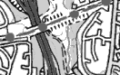

ADMISSION FREE
OPENING TIMES: MONDAY 9-5, TUESDAY-SATURDAY 9-9
BIDDICK LANE, FATFIELD,
DISTRICT 7, WASHINGTON,
TYNE & WEAR NE38 8AB
TEL: 0191 219 3455 FAX: 0191 219 3466
Click for location

by www.multimap.co.uk
[The exhibition]
[Anamorphosis main menu]
This web site is developed by
Phillip Kent